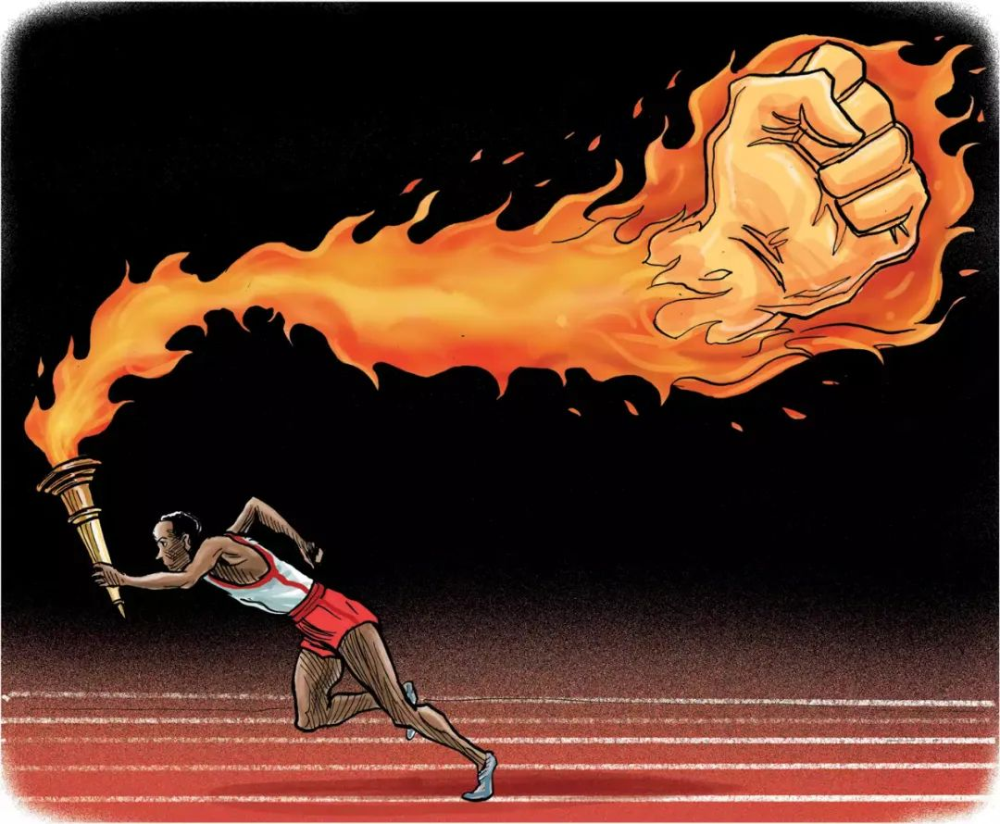

收录于合集

作品简介
【作者】 保罗·瓦斯奎兹（Joseph Paul Vasquez），中佛罗里达大学副讲师，研究域包括全球事务、军事社会学及安全问题研究。
【编译】 房宇馨（国政学人编译员，北京外国语大学国际关系学院）
【校对】 刘潇昱
【审核】 金琳
【排版】 黄婷婷
【美编】 聂涵琳
【来源】 Joseph Paul Vasquez, III, Patriot Games, War Games, and Political Football: A Constructivist Analysis of Militarization in an American Sport, Journal of Global Security Studies , Volume 5, Issue 2, April 2020, Pages 299–318,
https://doi.org/10.1093/jogss/ogaa015.
期刊简介
《全球安全研究杂志》（ The Journal of Global Security Studies ）旨在出版相关领域前沿的研究成果，为读者理解全球安全提供具有严谨性和独创性的思考，鼓励全球安全领域不同研究方向之间和跨领域之间的对话、参与和交流。
美国体育运动军事化的建构主义分析
Patriot Games, War Games,
and Political Football:
A Constructivist Analysis of Militarization in an American Sport
Joseph Paul Vasquez
内容提要 ****
作者认为，建构主义可以帮助我们从政治维度来理解体育，尤其是理解美式橄榄球运动的规范、意义和社会认同。 更具体地说，橄榄球在美国的发展使其成为一种与军国主义及爱国主义规范相联系的文化力量。当国内对于国家安全存在政见分歧时，政客们可以利用这种力量获取政治支持。这一现象源于体育运动的社会转型，体育从民众单纯的休闲娱乐活动转变成了由军事机构、橄榄球队和联盟以及体育媒体构成的“橄榄球铁三角”为获得政治支持而共同操纵的一种社会建构象征。理查德·尼克松和唐纳德·特朗普等美国总统都曾在国家安全受到严重质疑时，试图将橄榄球运动作为一种文化资产来获得支持。尼克松任内发生在越战时期，而在特朗普遭受“通俄门”质疑时也曾出现类似的情况。

文章导读
有学者认为，美国的政治与文化正日益走向威权主义、寡头政治和军国主义。例如，吉鲁指出，在美国军事化的社会经济体系之下，文化发展正在向包括电影、电视和电子游戏在内的娱乐产业方向倾斜，而艾森豪威尔总统对其的关注已超过对军事工业复合体（Military
Industrial
Complex）的重视。这一发展趋势同样包含了体育产业。学者们更多关注的是体育运动（尤其是橄榄球）在美国政治军事化中的作用及其政治化的过程。
具体而言，
美式橄榄球在社会建构下逐渐发展成为了军国主义和民族主义的象征，这使得政客们在对国家安全极为担忧时，可利用橄榄球运动吸引倾向于右翼政治的选民。
2016年，为声援“Black Lives
Matter”运动，美国职业橄榄球大联盟（NFL）旧金山49人队运动员科林·卡佩尼克在赛前奏国歌时以单膝跪地代替站立，引发众多球员争相效仿。但这一行为遭到美国总统特朗普的批评，他直指该运动员没有爱国主义精神，希望借此来美化总统的爱国形象并为涉嫌在大选中与俄罗斯政府串通的罪名洗清嫌疑。
作者通过分析体育运动在美国军方、与联盟和球队有关联的公民以及体育媒体的互动间所形成的社会建构形象，研究了近几任美国总统为何如此依赖体育运动的军事化。这里的军事化，是指某一活动表现出的军国主义特征的程度，或者“与军队和战争有关但又超越真正军事目的的各种风尚、偏好、威望、行动和思想”。
01
政治与体育的建构主义分析
为了解橄榄球运动为何极易表现出军事化的特征，以及对它的支持与认同，作者探讨了三组重要行为体如何合作构建其军事化的社会认同。与温特研究系统性建构的国际关系的分析框架不同，作者的分析强调国内规范和文化的发展。
具体来看，不同的体育运动可以反映出特定的价值观和规范，如棒球和美国的农业根源、篮球和后工业时代的创新、橄榄球和军国主义。规范常常与“适当性逻辑”（logic
of
appropriateness）的发展相吻合，这种逻辑来自于在“民主政治、科学和体育”等领域为社会角色提供指导的主体间共识。因在体育运动等休闲活动中，参与或观看不受政治或政党认同的约束，所以这种不成文的规则在这些活动中很重要。
规范通常是由关键人物或规范倡导者构建的，他们可以通过领导一场运动使新的规范超越临界点并为社会所广泛接受，使其他行为体将规范内化并相应地采取行动。
拥有组织资源的“橄榄球铁三角”使橄榄球运动的军国主义倾向得以延续。促成橄榄球运动形成军事化爱国主义规范的“铁三角”中，包括军民组织成员、橄榄球队及联盟以及体育媒体。由于政府通常拥有制定和维持规范的资源，因此美国安全官僚机构中的行为体在参与“持续的社会化和规范制定过程”时具有较大影响力。所以，在“铁三角”中，军民组织官员成为橄榄球运动军事化进程中最重要的规范倡导者也就不足为奇了。军队利用橄榄球来改良部队能力、凝聚士气以及推动征兵，体现了这一点。另外，球队及联盟（尤其是教练）经常通过宣扬橄榄球运动对国家安全的价值来延续这一运动的军国主义倾向。最后，由于建构主义者指明了话语、修辞、媒体和娱乐在塑造主体间关于文化、身份和规范共识上的力量，因此媒体构成了“铁三角”的第三边。
02
战壕之战、橄榄球铁三角 与政治橄榄球
橄榄球的军事化认同在其言辞表述中显而易见。军民组织、橄榄球球队及联盟和媒体为橄榄球的军事化话语和术语做出了贡献，教练、球员和观众都习惯在橄榄球比赛中使用“战壕之战”、“赛场将军”、“闪电战”、“擒杀四分卫”等术语。而体育媒体的相关报道也进一步提升了人们对战争和体育在认知上的联系。
鉴于橄榄球运动的流行，这项运动不可避免地融入了美国社会的发展，但其发展趋势尚不确定。很多人表达了对橄榄球运动军事化现象的批判，提出“军事化的体育运动在和平时期实践必须受到谴责”。另一大挑战出现在1893年，一场由西点军校和美国海军学院共同举办的橄榄球赛险些引发一名将军和一名上将的决斗，时任美国总统克利夫兰便下令禁止了陆、海军之间的橄榄球比赛。
在十九、二十世纪之交，橄榄球运动也被一些有影响力的南方保守派新教徒领袖所鄙弃，他们认为橄榄球使身体和力量的重要性超越了灵魂与谦卑，违背了基督教福音的教义，因此对南方学校（如奥本大学、杜克大学、埃默里大学等）的橄榄球运动发起了抵制。
事实上，日益军事化的橄榄球运动克服了上述挑战，这表明这项运动已经超越了规范性吸引力的临界点。
橄榄球运动能够在提高士兵身体素质、培养团队合作精神、锻炼韧性和忍耐力及为他人牺牲的意愿等方面为美军军事训练提供支持，一定程度上有助于扩大人们对这项运动的接受度和欣赏度。
**
**西奥多·罗斯福或许是第一位提倡利用橄榄球训练士兵的总统，这使他成为橄榄球运动军事化最为著名的倡导者。作为麦金利总统时期的海军部副部长，罗斯福在美国对西班牙宣战前游说陆军部长拉塞尔·阿尔杰重启中断多年的陆-
海军橄榄球对抗赛。在他的提倡下，美国利用橄榄球等体育运动“锻炼身体，增强自信”，从而提高了“军事效率”。由于橄榄球队员在比赛中伤亡的事件层出不穷，罗斯福在1905年向各大学校长施压，要求大学对橄榄球运动的规则进行修改。
冷战期间，约翰·肯尼迪总统曾利用橄榄球等体育活动取得了巨大的政治效果。在大选中，肯尼迪面对的竞争对手是持坚定反共立场的副总统理查德·尼克松。
出身于哈佛大学橄榄球队的肯尼迪经常在镜头前展示与家人朋友参与触式橄榄球运动的画面，借橄榄球表现自己强硬和自信的形象，象征性地塑造自身对苏联和古巴共产党的对抗，以吸引选民。
03
有关尼克松和特朗普的案例
尼克松
在历任美国总统中，理查德·尼克松与体育的联系最为紧密。
1960年，尼克松选择母校惠蒂尔学院的橄榄球场作为1960年总统竞选的第一站；1969年，尼克松在由麦克阿瑟等人创立的美国国家橄榄球基金会（NFF）上发表演讲时，称赞了橄榄球在性格培养和团队合作方面的发展。此外，他还经常与NFL的华盛顿球队互动。
受益于美国橄榄球军事化的社会形象认同，尼克松在越战期间利用橄榄球与强硬的传统主义者结盟，以回应反战声浪。
1969年，在全国范围内的大规模抗议活动“终止越战游行”（The Moratorium to End the War in
Vietnam）结束后不久，尼克松于10月在迈阿密参加了一场NFL比赛，受到了全场起立鼓掌欢迎。11月，尼克松发表全国演讲，肯定了保守的“沉默的大多数”，并宣布下一次大规模抗议活动的前一周为民族团结周。为庆祝民族团结周，美国政府希望橄榄球比赛能强调爱国主义主题。由前NFL绿湾包装工队功勋教练文斯·隆巴迪执教的华盛顿印第安人队在比赛中安排了一场爱国主义表演，尼克松向球队表示了感谢。在而后的抗议活动后，尼克松又在哥伦比亚特区出席了一场NFL赛事。受益于在橄榄球运动中的积极表现，尼克松的民调支持率有所上升。
更重要的是，尼克松曾安排杰出的橄榄球球员和教练在其政府中担任要职。1973年时任副总统比罗·阿格诺辞职后，尼克松任命前密歇根大学橄榄球球星、共和党议员杰拉尔德·福特为副总统。1968年，尼克松甚至希望邀请文斯·隆巴迪加入竞选团队，但因隆巴迪是民主党人这才只得作罢。
尼克松不仅仅将橄榄球教练视为潜在的竞选伙伴。1970年，尼克松想要选择一位可以管理美国兵役局并协助实施取消征兵制、改行全志愿兵役制草案的政治伙伴，他曾考虑印第安纳大学的约翰·庞特教练和南卡罗来纳大学的保罗·迪泽尔教练。值得注意的是，在1972年，“为纪念尼克松对橄榄球的热爱”，美国国防部曾以“后卫行动（Operations Linebacker）”和“后卫二号行动（Linebacker II）”为代号对河内实施空中轰炸，迫使河内达成和谈协议。
在被指定为美国国歌前，《星光灿烂的旗帜》这首歌曲在一战时期一直在棒球比赛中演奏。到了二战时期，演奏国歌成为橄榄球比赛中的固定环节。1968年越战期间，NFL总裁皮特·罗泽尔曾指挥球员们向国旗致敬。拒绝向国旗敬礼的球员遭到联盟的排斥。
在尼克松时代结束后，美国国防部与橄榄球这项运动之间始终联系紧密，因为五角大楼将橄榄球视为促进征兵的文化工具。 结束强制性的义务兵役制后，五角大楼利用橄榄球吸引年轻的、符合年龄要求的年轻人自愿参军。2014年美国陆军首次在电视上投放征兵广告。除电视广告外，美国陆军职业橄榄球名人堂卓越奖从2012年开始资助优秀的高中生运动员，一定程度上因为身体健壮的年轻人更有可能在高中时有意向参军。
除募兵外，橄榄球界还试图在国内外提高美军士气。 早在1951年，西点军校的橄榄球教练们在马修·里奇韦中将的授意下慰问驻韩美军。在越战期间，美国劳军联合组织（USO）与NFL达成合作，联盟球员、教练和啦啦队慰问驻越美军的活动日益频繁。
特朗普
作者认为，特朗普对科林·卡佩尼克等NFL抗议球员的指责，是希望借此缓和与国家安全问题有关的政治动荡。尼克松利用橄榄球来对抗反战激进主义浪潮，但特朗普面对的情况更为棘手。尼克松上台时的民调支持率为59%，而特朗普仅为45%。从上任伊始，特朗普的反对率就高至47%。
特朗普打着爱国主义的幌子批评某些NFL球员不尊重国旗和国家，是为了克服在国家安全问题上的脆弱性以及国内政治上的失误。 在竞选中，他有时甚至拥抱美国国旗。此外，特朗普热衷于宣扬爱国主义，安排现役或退役的美国将领担任要职，如国防部长（詹姆斯·马蒂斯）、国家安全顾问（迈克尔·弗林和麦克马斯特）、白宫首席幕僚长（约翰·凯利）。
在科林·卡佩尼克事件发生前，特朗普民调支持率持续下降的最大原因是特朗普及其竞选团队被指控与俄罗斯勾结。特朗普在当时不同寻常地对欧洲盟友施以强烈谴责，与对俄罗斯总统普京的低调指责形成了鲜明的对比，人们认为这也是特朗普“通俄”的表象，对特朗普的忠诚及爱国精神表示质疑。
特朗普批评抗议橄榄球运动员不尊重国歌，似乎也为维持右翼阵营的支持。 例如，2003年，在保守派脱口秀主持人拉什·林博加盟ESPN《美国橄榄球联盟周日倒计时》节目后，该节目的收视率上升了10%。调查数据显示，橄榄球球迷更倾向于共和党和保守派，而非民主党和自由派。此外，在2010年中期选举期间，共和党投放的政治广告占周末晚间橄榄球转播期间政治广告的70%，民主党则更多地在情景喜剧播出期间投放广告。另外，2013年高校橄榄球比赛转播收视率最高的五个城市在2016年大选时都更为支持特朗普。
04
结论
体育和政治是相互交叉的，因为体育能够推广社会价值观、宣传候选人的亲和力及公共认同，并且有助于满足公众心理需求。 因此，当面对国家安全问题时，尼克松、特朗普美国右翼领导人寻求与军事化爱国主义密切相关的体育运动来获取政治支持是合情合理的。因为，利用体育运动不仅有助于在征兵期间提高部队的战备状态和士气，而且有利于为国家招募自愿服役的士兵并表彰退伍军人和现役士兵。
从短期来看，由于俄罗斯和乌克兰事件可能关系到特朗普2020年的连任，而且考虑到美国大选在NFL赛季半程时举行，因此特朗普很可能会继续尝试利用橄榄球运动为自己争取选票。从长期来看，如果两极分化的世界观及由其引发的政府官员的政治偏好日益固化，那么体育很可能继续向高度政治化的方向发展。
未来的研究还可能关注以下问题。第一，在何种情况下，政客们会诉诸不同形式的国内社会文化活动吸引力来应对政治逆境。第二，除美国以外，其他国家的领导人是否会利用军事化或高度民族主义的体育运动来应对类似威胁国家安全的争议事件。第三，女性体育运动在美国的兴起是否激发了女性参军的热情。
译者评述
竞技体育不仅仅是一种纯粹的体育行为,更是一项蕴含政治和文化等多种因素的活动。随着体育运动日渐融入社会发展主流，体育及其构建的社会认同逐渐被赋予了极其重要的政治内涵。在国际层面，从“乒乓外交”到“板球外交”，体育成为了改善国家间关系、推动政治变革的重要工具；而在国内层面，政客们开始利用体育来表达政治诉求、争取政治支持。
本文以建构主义的分析视角，探究了日益走向军事化和政治化的美式橄榄球运动，如何通过其形成的军事化爱国主义等规范和社会认同影响美国政治生活，并以尼克松和特朗普时期总统与橄榄球运动之间的互动为案例，分析了橄榄球运动等竞技体育项目与政治之间相互嵌入和相互渗透的关系。
政治考量始终是美国历任总统选择参与橄榄球运动的首要因素。由军队、橄榄球职业联盟以及体育媒体构成的“橄榄球铁三角”推动着橄榄球运动逐渐发展成为美国社会中代表军国主义及爱国主义的一种社会建构象征和重要文化力量。美国向来重视橄榄球运动，前总统约翰·肯尼迪曾提出“美国需要更多精力充沛的公民去努力战胜共产主义，尤其坚信年轻一代应该进行橄榄球等体育训练，去保卫国家，而针对年轻一代体育训练的失败则被认为是对于美国未来的威胁和对国际抵抗共产主义能力的削弱。”橄榄球运动不仅可提升国民特别是士兵们的身体素质、培养团队合作精神，而且可以发挥吸引右翼选民、宣扬爱国主义精神、构建领导人自信强硬形象的政治作用。在选票政治的逻辑驱使下，如何将橄榄球运动转化成为自己摆脱政治困境、塑造积极形象、扩大竞选优势的政治资源，是总统及其团队需要思考的重要议题。在此意义上，肯尼迪、尼克松、特朗普总统都曾利用橄榄球运动取得过显著的政治效果。橄榄球对美国政治生活的影响显而易见。
未来，怎样更好地促进体育与政治的双向良性互动将成为各国政府需要研究的重要课题。
校对者观点 ****
本人认为文章在案例的选择上有所不妥。在特朗普这一案例的分析中，似乎并没有体现出体育运动与军事化或者军国主义的联系，更多的是政治人物如何利用体育运动来转嫁政治风险。而尼克松或者肯尼迪的案例更能证明作者的观点，其中明确表明了橄榄球运动与军事或者军事化爱国主义的紧密联系。
文章观点不代表本平台观点，本平台评译分享的文章均出于专业学习之用, 不以任何盈利为目的，内容主要呈现对原文的介绍，原文内容请通过各高校购买的数据库自行下载
国政学人
支持学术公益与知识传播
微信扫一扫赞赏作者 __赞赏
已喜欢，对作者说句悄悄话
取消 __
发送给作者
发送
最多40字，当前共字
上一页 1/3 下一页
长按二维码向我转账
支持学术公益与知识传播
受苹果公司新规定影响，微信 iOS 版的赞赏功能被关闭，可通过二维码转账支持公众号。